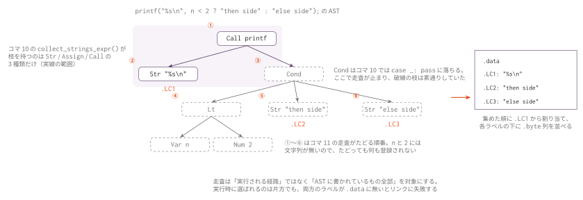

コマ11: 式の走査と libc 活用
今日のゴール
文字列リテラルの走査を式全体へ広げ、どこに書かれた文字列でも .data に出るようにする。
そのうえで、lib.h に残っているストリーム関数と exit を使ってみる。
この回は新しい概念の回ではない
先に断っておく。この回に新しい仕組みはほとんど無い。
コマ10 で、文字列を集める走査の仕組み（_intern / emit_data_section / codegen_Str）は
すでに全部そろっている。足りないのは走査の網羅だけである。
コマ10 の collect_strings_expr() は Str / Assign / Call の3種類しか枝を持っておらず、
それ以外の式の下にある文字列は素通りしていた。
if ("abc"[1] != 'b') { // Index の下にある "abc" を、コマ10 はまだ拾えない
return 1;
}この回でやるのは、コマ10 で文に対して書いたのと同じ形のハンドラを、式の種類の数だけ書くことである。 1つあたり2〜3行で、種類が多いだけの作業になる。 回が分かれているのは概念が変わったからではなく、書く量をならすためである。
作業そのものには意味がある。AST を手でたどる練習は、後のコマ（グローバル変数の走査、
sizeof の型計算、多ファイル対応）でも同じ形で繰り返し出てくる。
この回までの言語仕様（EBNF）
この回までに書けるプログラムの文法を、累積の形でまとめる。
記法と最終形の全体像は
language_spec.md の「形式文法（EBNF）」を参照。
文法もコマ10 とほぼ同じで、増えるのは scalar_type の 'struct' IDENT stars の1行だけである。
lib.h のストリーム関数を使うために struct FILE * と書くようになるためで、
構造体そのもの（定義・フィールド・. と ->）はコマ12 で扱う。
この回で書ける #include は提供物の lib.h の取込みだけで、
自作ヘッダと入れ子の取込み、#define はコマ14 で扱う。
include_dir ::= '#' 'include' '"' FILENAME '"' NEWLINE /* #define はコマ14 */
stars ::= '*' { '*' }
scalar_type ::= 'int' [ stars ]
| 'char' [ stars ]
| 'struct' IDENT stars /* void * はコマ12 */
obj_type ::= scalar_type /* struct Tag はコマ12 */
ret_type ::= scalar_type
| 'void'
type_name ::= obj_type
program ::= external_decl { external_decl }
external_decl ::= func_proto
| func_def /* struct 定義はコマ12、グローバル変数はコマ13 */
var_decl ::= obj_type IDENT ';'
param ::= scalar_type IDENT
param_list ::= param { ',' param }
func_proto ::= ret_type IDENT '(' [ param_list [ ',' '...' ] ] ')' ';'
func_def ::= ret_type IDENT '(' [ param_list ] ')' func_body
func_body ::= '{' { var_decl } { stmt } '}'
stmt ::= expr_stmt
| block
| if_stmt
| while_stmt
| for_stmt
| 'break' ';'
| 'continue' ';'
| 'return' [ expr ] ';'
expr_stmt ::= [ expr ] ';'
block ::= '{' { stmt } '}'
if_stmt ::= 'if' '(' expr ')' stmt [ 'else' stmt ]
while_stmt ::= 'while' '(' expr ')' stmt
for_stmt ::= 'for' '(' [ expr ] ';' [ expr ] ';' [ expr ] ')' stmt
expr ::= assign_expr
assign_expr ::= unary_expr '=' assign_expr /* 右結合 */
| cond_expr
cond_expr ::= binary_expr [ '?' expr ':' cond_expr ] /* 右結合 */
binary_expr ::= unary_expr { bin_op unary_expr }
bin_op ::= '*' | '/' | '%' /* 論理 && || はコマ13 */
| '+' | '-'
| '<' | '>' | '<=' | '>='
| '==' | '!='
unary_expr ::= postfix_expr
| '-' unary_expr
| '*' unary_expr
| '&' unary_expr
| '++' unary_expr
| '--' unary_expr
| 'sizeof' '(' type_name ')'
postfix_expr ::= primary_expr { postfix_suffix }
postfix_suffix ::= '[' expr ']' /* . と -> はコマ12 */
primary_expr ::= INT_LITERAL
| CHAR_LITERAL
| STRING_LITERAL
| IDENT '(' [ arg_list ] ')'
| IDENT
| '(' expr ')'
arg_list ::= assign_expr { ',' assign_expr }この回までの二項演算子の優先順位（高い順）:
| 優先順位 | 演算子 | 結合 |
|---|---|---|
| 1（高） | * / % |
左 |
| 2 | + - |
左 |
| 3 | < > <= >= |
左 |
| 4 | == != |
左 |
表の読み方はコマ1の「木の形は規則で決まっている」と
language_spec.md の「演算子」を参照。
字句トークンの定義はどの回でも同じであるため、ここでは繰り返さない。
language_spec.md の「字句トークン」を参照。
3つの型に分かれる
書くハンドラは、子の数で3つの型に分かれる。
| 型 | 子 | 対象 |
|---|---|---|
| 単項 | node.operand |
Neg / Addr / Deref（PreInc / PreDec も同じ枝を使う） |
| 二項 | node.lhs と node.rhs |
Add / Sub / Mul / Div / Mod / Eq / Ne / Lt / Le / Index |
| 三項 | node.cond と node.then と node.else_ |
Cond |
どれも、子を collect_strings_expr() に渡して降りるだけである。
def collect_strings_expr_Add(self, node: Node) -> None:
self.collect_strings_expr(node.lhs)
self.collect_strings_expr(node.rhs)dispatch の match はスケルトンに書いてある（Codegen11.collect_strings_expr() が
コマ10 版を上書きし、すべての式の種類を枝に持つ）。実装するのは呼ばれる側だけである。
同じ本体を何度も書くのが冗長に見えるなら、共通の実体を1つ書いて名前を束ねてもよい。
def _collect_binary(self, node: Node) -> None:
self.collect_strings_expr(node.lhs)
self.collect_strings_expr(node.rhs)
collect_strings_expr_Add = _collect_binary
collect_strings_expr_Sub = _collect_binaryただし最初の数個は展開して書き、AST のどのフィールドに子がぶら下がっているかを 自分の手で確かめてから束ねること。
実行されない枝も走査する
三項演算子で気をつけるのはここである。
printf("%s\n", n < 2 ? "then side" : "else side");実行時に選ばれるのは片方だけだが、.data には両方の文字列が必要である。
選ばれなかった側のラベルが .data に無いと、la の参照先が未定義になってリンクに失敗する。
コマ10 の if / else と同じ理由である。
走査は「実行される経路」ではなく「AST に書かれているもの全部」を対象にする。

コマ10 の走査は Call の引数まで降りたところで Cond に当たって止まり、その下の
2 つの文字列に届かない。ハンドラを式の種類の数だけ足すと、走査が破線の枝まで伸びて
.LC1 から .LC3 までが .data に揃う。
編集するファイル
mycc.py
importlib でコマ10 の Codegen10 を継承した Codegen11 に、以下を追加する。
| 実装対象 | 役割 |
|---|---|
collect_strings_expr_Neg / _Addr / _Deref |
単項式の operand をたどる |
collect_strings_expr_Add / _Sub / _Mul / _Div / _Mod |
算術二項演算の lhs と rhs をたどる |
collect_strings_expr_Eq / _Ne / _Lt / _Le |
比較演算の lhs と rhs をたどる |
collect_strings_expr_Index |
添字式の lhs と rhs をたどる |
collect_strings_expr_Cond |
三項演算子の cond / then / else_ をたどる |
_intern / emit_data_section / type_of_expr_Str / codegen_Str と、文のハンドラは
コマ10 の実装をそのまま継承する。書き直す必要はない。
実装手順
- 単項の3種（
Neg/Addr/Deref）を書く - 二項の10種（算術5・比較4・
Index）を書く Condを書くstr_in_expr.cとstr_in_ops.cを通す（添字・ポインタ加算・間接参照・比較、および算術・単項・<=の奥にある文字列）str_cond_select.cを通す（三項演算子の両方の枝）strlen_literal.cを通す（文字列リテラルを自作関数に渡し、'\0'まで読む）- 次節の
lib.hの残りの関数に目を通し、file_stream.cとlib_exit.cを通す
手を動かして書くのは 1〜3 だけで、そこまで終われば文字列リテラルはプログラムの
どこに書かれていても .data に出るようになる。4 以降は書いたものを確かめる作業で、
7 で新しく書くコードは無い（理由は次節）。
lib.h の残りの関数: ストリーム
走査が済んだら、lib.h の残りの宣言を使ってみる。
言語仕様の「標準ライブラリ」節に載っている関数はこれで全部で、
どれも libc にそのままリンクされる。
struct FILE; // 不透明型。中身は見ない
int fprintf(struct FILE *f, char *fmt, ...);
struct FILE *fdopen(int fd, char *mode);
struct FILE *fopen(char *path, char *mode);
int fread(void *buf, int size, int n, struct FILE *f);
int fclose(struct FILE *f);struct FILE は前方宣言だけがあって定義がない型である。
フィールドを持たないので . や -> は書けず、使い方は struct FILE * という
ポインタを受け渡すことに限られる。ポインタのサイズは指し先の中身によらず 8 バイトなので、
構造体そのものを扱えるようになるコマ12 を待たずにこの回で使える。
コード生成としては、コマ6 の関数呼び出しとコマ8 の ty_str 管理がそのまま働くので、
ここで新しく書くコードは無い。すでに書いたものが通ることを確かめる節である。
用途は主に 2 つある。
| やりたいこと | 書き方 |
|---|---|
| 標準エラーへ出す | fdopen(2, "w") でストリームを作り、そこへ fprintf する |
| ファイルを読む | fopen → fread → fclose。fopen は失敗すると NULL を返す |
struct FILE *err;
err = fdopen(2, "w");
fprintf(err, "error: unexpected token\n");自作コンパイラのエラーメッセージを標準エラーへ出す形は、 発展課題 P1（セルフホスト）で実際に使うことになる。
残る exit(code) は、指定した終了コードでその場でプログラムを終わらせる。
戻ってこないので、exit の後に書いた文は実行されない。
これで lib.h の宣言は全部使ったことになる（malloc はコマ9 で使っている）。
最後に file_stream.c と lib_exit.c を通す。
上に書いたとおり、実装手順の 6 までができていれば新しく書く処理はない。
落ちるとしたら走査か型の扱いが原因なので、そこを疑う。
tests/
| ファイル | 内容 | 期待値 |
|---|---|---|
str_in_expr.c |
添字・ポインタ加算・間接参照・比較の奥にある文字列（式の走査） | 終了コード 42 |
str_in_ops.c |
単項マイナス・アドレス・減算・乗算・除算・剰余・<= の下にある文字列。二項は左右で別の文字列にしてあるので片側だけの走査も落ちる |
終了コード 42 |
str_cond_select.c |
三項演算子の両方の枝にある文字列（Cond の走査） |
big / else side |
strlen_literal.c |
文字列を自作の my_strlen に渡す |
終了コード 3 |
file_stream.c |
fdopen/fprintf/fopen/fread/fclose |
stream ok / fdopen(2, "w") への出力 / 終了コード 42 |
lib_exit.c |
exit で終了コードを指定して打ち切る |
before exit / 終了コード 7 |
テスト
python3 scaffold/test_runner.py sessions/11_expr_walk_libcコマ10 のテストも引き続き通ることを確かめる。
Codegen11 はコマ10 の実装を継承しているので、両方が通って初めて走査が完成したと言える。
python3 scaffold/test_runner.py sessions/10_strings_data_section個別に動かす場合は、次のようにする。
python3 sessions/11_expr_walk_libc/mycc.py sessions/11_expr_walk_libc/tests/str_in_expr.c \
| riscv64-linux-gnu-gcc -x assembler -static - -o out
qemu-riscv64 ./out
echo $?注意
走査の抜けは、コンパイルでもアセンブルでもなくリンクで見つかる。
.LCn が未定義だというエラーが出たら、その文字列がどの式の下にあるかを見て、
対応するハンドラが case _: pass に落ちていないかを疑う。
逆に、走査で拾っただけの文字列は .data に出るが、実行時に使われるとは限らない。
選ばれなかった三項演算子の枝の文字列は .data に残る。これは正しい状態である。
fread の戻り値は読めた個数である。fopen は失敗すると NULL を返すので、
戻り値を確かめずに fread へ渡さない。
exit の後ろに書いた文は実行されない。lib_exit.c の .stdout が
exit の前の1行だけになっているのはそのためである。
ここまでで着手できる発展課題
新しく開くトピックはない。コマ10 で挙げた R1（libc なしで動かす）と L3（可変長引数の定義）が引き続き着手できる。
生成したアセンブリで文字列のロードと printf の呼び出しを1命令ずつ確認したいときは、RV64 シミュレータ に貼り付ける。
この回の完成形に相当する OCaml 版参考実装が ../../workbook/ocaml/README.md にある。完成相当の実装なので、まず自分の実装方針を検討してから確認すること。